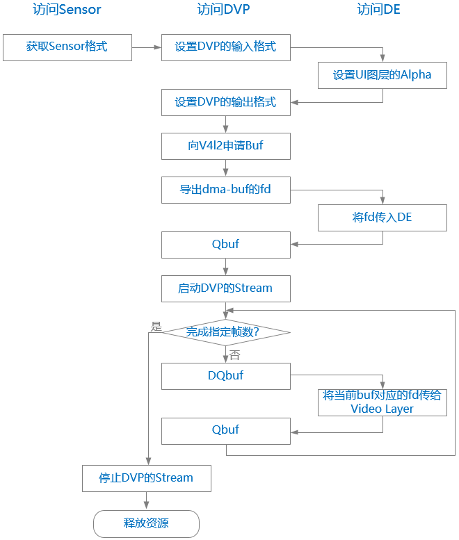

APP Demo
15 Jan 2024
Read time: 21 minute(s)
APP 层的处理流程
APP 中实现从 Sensor -> DVP -> DE 的数据通路，整体的处理流程如下图（图中按照访问对象分为三列，实际上整体是串行执行）：

test-dvp 支持了 先旋转再显示，上图中为了简化并未展示 GE 的处理。在图中将当前 Buf 传给 Video Layer
环节，如果打开了旋转功能（参数 -a ），会先将 Buf 送给 GE 旋转，然后才给 DE 去显示。
APP Demo 参考实现
Demo 代码见
test-dvp/test_dvp.c，如下：
#define VID_BUF_NUM 3
#define DVP_PLANE_NUM 2
#define CMA_BUF_MAX (8 * 1024 * 1024)
#define DMA_HEAP_DEV "/dev/dma_heap/reserved"
#define FB_DEV "/dev/fb0"
#define VIDEO_DEV "/dev/video0"
#define SENSOR_DEV "/dev/v4l-subdev0"
#define DVP_SUBDEV_DEV "/dev/v4l-subdev1"
static const char sopts[] = "f:c:w:h:r:a:uv";
static const struct option lopts[] = {
{"format", required_argument, NULL, 'f'},
{"capture", required_argument, NULL, 'c'},
{"width", required_argument, NULL, 'w'},
{"height", required_argument, NULL, 'h'},
{"framerate", required_argument, NULL, 'r'},
{"angle", required_argument, NULL, 'a'},
{"usage", no_argument, NULL, 'u'},
{"verbose", required_argument, NULL, 'v'},
{0, 0, 0, 0}
};
struct video_plane {
int fd;
int buf;
int len;
};
struct video_buf_info {
char *vaddr;
u32 len;
u32 offset;
struct video_plane planes[DVP_PLANE_NUM];
};
struct aic_video_data {
int w;
int h;
int frame_size;
int fmt; // output format
struct v4l2_subdev_format src_fmt;
struct video_buf_info binfo[VID_BUF_NUM + 1];
};
struct aic_media_dev {
/* about Sensor */
int sensor_fd;
int sensor_width;
int sensor_height;
int sensor_fr;
/* about DVP */
int dvp_fd;
int video_fd;
/* about GE */
struct mpp_ge *ge_dev;
int rotation;
/* about DE */
int fb_fd;
int fb_xres;
int fb_yres;
};
static struct aic_media_dev g_mdev = {0};
static struct aic_video_data g_vdata = {0};
static int g_verbose = 0;
/* Functions */
void usage(char *program)
{
printf("Usage: %s [options]: \n", program);
printf("\t -f, --format\t\tformat of input video, NV16/NV12 etc\n");
printf("\t -c, --count\t\tthe number of capture frame \n");
printf("\t -w, --width\t\tthe width of sensor \n");
printf("\t -h, --height\t\tthe height of sensor \n");
printf("\t -r, --framerate\tthe framerate of sensor \n");
#ifdef SUPPORT_ROTATION
printf("\t -a, --angle\t\tthe angle of rotation \n");
#endif
printf("\t -u, --usage \n");
printf("\t -v, --verbose \n");
printf("\n");
printf("Example: %s -f nv16 -c 1\n", program);
}
/* Open a device file to be needed. */
int device_open(char *_fname, int _flag)
{
s32 fd = -1;
fd = open(_fname, _flag);
if (fd < 0) {
ERR("Failed to open %s errno: %d[%s]\n",
_fname, errno, strerror(errno));
exit(0);
}
return fd;
}
int get_fb_size(void)
{
struct fb_var_screeninfo var;
if (ioctl(g_mdev.fb_fd, FBIOGET_VSCREENINFO, &var) < 0) {
ERR("ioctl FBIOGET_VSCREENINFO");
close(g_mdev.fb_fd);
return -1;
}
g_mdev.fb_xres = var.xres;
g_mdev.fb_yres = var.yres;
printf("Framebuf size: width %d, height %d\n", g_mdev.fb_xres, g_mdev.fb_yres);
return 0;
}
int set_ui_layer_alpha(int val)
{
int ret = 0;
struct aicfb_alpha_config alpha = {0};
alpha.layer_id = 1;
alpha.enable = 1;
alpha.mode = 1;
alpha.value = val;
ret = ioctl(g_mdev.fb_fd, AICFB_UPDATE_ALPHA_CONFIG, &alpha);
if (ret < 0)
ERR("ioctl() failed! errno: %d[%s]\n", errno, strerror(errno));
return ret;
}
void vidbuf_dmabuf_begin(struct aic_video_data *vdata, u32 num)
{
int i, j;
struct dma_buf_info fds = {0};
for (i = 0; i < num; i++) {
struct video_plane *plane = vdata->binfo[i].planes;
for (j = 0; j < DVP_PLANE_NUM; j++, plane++) {
fds.fd = plane->fd;
if (ioctl(g_mdev.fb_fd, AICFB_ADD_DMABUF, &fds) < 0)
ERR("Failed to add DMABUF for %d! %d[%s]\n",
plane->fd, errno, strerror(errno));
}
}
}
void vidbuf_dmabuf_end(struct aic_video_data *vdata, u32 num)
{
int i, j;
struct dma_buf_info fds = {0};
for (i = 0; i < num; i++) {
struct video_plane *plane = vdata->binfo[i].planes;
for (j = 0; j < DVP_PLANE_NUM; j++, plane++) {
fds.fd = plane->fd;
if (ioctl(g_mdev.fb_fd, AICFB_RM_DMABUF, &fds) < 0)
ERR("Failed to rm DMABUF for %d! err %d[%s]\n",
plane->fd, errno, strerror(errno));
}
}
}
int sensor_set_fmt(void)
{
int ret = 0;
struct v4l2_subdev_format f = {0};
struct v4l2_subdev_frame_interval fr = {0};
/* Set resolution */
f.pad = 0;
f.which = V4L2_SUBDEV_FORMAT_ACTIVE;
if (ioctl(g_mdev.sensor_fd, VIDIOC_SUBDEV_G_FMT, &f) < 0) {
ERR("ioctl() failed! err %d[%s]\n", errno, strerror(errno));
return -1;
}
if (f.format.width != g_mdev.sensor_width ||
f.format.height != g_mdev.sensor_height) {
printf("Set sensor resolution: %dx%d -> %dx%d\n",
f.format.width, f.format.height,
g_mdev.sensor_width, g_mdev.sensor_height);
f.format.width = g_mdev.sensor_width;
f.format.height = g_mdev.sensor_height;
if (ioctl(g_mdev.sensor_fd, VIDIOC_SUBDEV_S_FMT, &f) < 0) {
ERR("ioctl() failed! err %d[%s]\n", errno, strerror(errno));
return -1;
}
}
/* Confirm the current resolution */
if (ioctl(g_mdev.sensor_fd, VIDIOC_SUBDEV_G_FMT, &f) < 0) {
ERR("ioctl() failed! err %d[%s]\n", errno, strerror(errno));
return -1;
}
/* Set framerate */
ret = ioctl(g_mdev.sensor_fd, VIDIOC_SUBDEV_G_FRAME_INTERVAL, &fr);
if ((ret == 0) && (fr.interval.denominator != g_mdev.sensor_fr)) {
printf("Set sensor framerate: %d -> %d\n",
fr.interval.denominator, g_mdev.sensor_fr);
fr.interval.denominator = g_mdev.sensor_fr;
ret = ioctl(g_mdev.sensor_fd, VIDIOC_SUBDEV_S_FRAME_INTERVAL, &fr);
if (ret < 0) {
ERR("ioctl() failed! err %d[%s]\n", errno, strerror(errno));
return -1;
}
/* Confirm the current framerate */
ioctl(g_mdev.sensor_fd, VIDIOC_SUBDEV_G_FRAME_INTERVAL, &fr);
}
g_vdata.src_fmt = f;
g_vdata.w = g_vdata.src_fmt.format.width;
g_vdata.h = g_vdata.src_fmt.format.height;
printf("Sensor format: w %d h %d, code %#x, colorspace %#x, fr %d\n",
f.format.width, f.format.height, f.format.code,
f.format.colorspace, fr.interval.denominator);
return 0;
}
int dvp_subdev_set_fmt(void)
{
struct v4l2_subdev_format f = g_vdata.src_fmt;
f.pad = 0;
f.which = V4L2_SUBDEV_FORMAT_ACTIVE;
if (ioctl(g_mdev.dvp_fd, VIDIOC_SUBDEV_S_FMT, &f) < 0) {
ERR("ioctl() failed! err %d[%s]\n", errno, strerror(errno));
return -1;
}
return 0;
}
int dvp_cfg(int width, int height, int format)
{
struct v4l2_format f = {0};
f.type = V4L2_BUF_TYPE_VIDEO_CAPTURE_MPLANE;
f.fmt.pix_mp.width = g_vdata.src_fmt.format.width;
f.fmt.pix_mp.height = g_vdata.src_fmt.format.height;
f.fmt.pix_mp.pixelformat = g_vdata.fmt;
f.fmt.pix_mp.num_planes = DVP_PLANE_NUM;
if (ioctl(g_mdev.video_fd, VIDIOC_S_FMT, &f) < 0) {
ERR("ioctl() failed! err %d[%s]\n", errno, strerror(errno));
return -1;
}
return 0;
}
int dvp_expbuf(int index)
{
int i;
struct video_buf_info *binfo = &g_vdata.binfo[index];
struct v4l2_exportbuffer expbuf = {0};
for (i = 0; i < DVP_PLANE_NUM; i++) {
memset(&expbuf, 0, sizeof(struct v4l2_exportbuffer));
expbuf.type = V4L2_BUF_TYPE_VIDEO_CAPTURE_MPLANE;
expbuf.index = index;
expbuf.plane = i;
if (ioctl(g_mdev.video_fd, VIDIOC_EXPBUF, &expbuf) < 0) {
ERR("%d/%d: ioctl() failed! err %d[%s]\n",
i, index, errno, strerror(errno));
return -1;
}
binfo->planes[i].fd = expbuf.fd;
if (g_verbose)
DBG("%d-%d Export DMABUF fd %d\n", index, i, expbuf.fd);
}
return 0;
}
int dvp_request_buf(int num)
{
int i;
struct v4l2_buffer buf = {0};
struct v4l2_requestbuffers req = {0};
struct v4l2_plane planes[DVP_PLANE_NUM];
req.count = num;
req.type = V4L2_BUF_TYPE_VIDEO_CAPTURE_MPLANE;
req.memory = V4L2_MEMORY_MMAP; // Only MMAP will do alloc memory
if (ioctl(g_mdev.video_fd, VIDIOC_REQBUFS, &req) < 0) {
ERR("ioctl() failed! err %d[%s]\n", errno, strerror(errno));
return -1;
}
for (i = 0; i < num; i++) {
if (dvp_expbuf(i) < 0)
return -1;
memset(&buf, 0, sizeof(struct v4l2_buffer));
buf.type = V4L2_BUF_TYPE_VIDEO_CAPTURE_MPLANE;
buf.index = i;
buf.length = DVP_PLANE_NUM;
buf.memory = V4L2_MEMORY_DMABUF;
buf.m.planes = planes;
if (ioctl(g_mdev.video_fd, VIDIOC_QUERYBUF, &buf) < 0) {
ERR("ioctl() failed! err %d[%s]\n",
errno, strerror(errno));
return -1;
}
}
return 0;
}
void dvp_release_buf(int num)
{
int i;
struct video_buf_info *binfo = NULL;
for (i = 0; i < num; i++) {
binfo = &g_vdata.binfo[i];
if (binfo->vaddr) {
munmap(binfo->vaddr, binfo->len);
binfo->vaddr = NULL;
}
}
}
int dvp_queue_buf(int index)
{
struct v4l2_buffer buf = {0};
struct v4l2_plane planes[DVP_PLANE_NUM] = {0};
buf.type = V4L2_BUF_TYPE_VIDEO_CAPTURE_MPLANE;
buf.memory = V4L2_MEMORY_MMAP;
buf.index = index;
buf.length = DVP_PLANE_NUM;
buf.m.planes = planes;
if (ioctl(g_mdev.video_fd, VIDIOC_QBUF, &buf) < 0) {
ERR("ioctl() failed! err %d[%s]\n", errno, strerror(errno));
return -1;
}
return 0;
}
int dvp_dequeue_buf(int *index)
{
struct v4l2_buffer buf = {0};
struct v4l2_plane planes[DVP_PLANE_NUM] = {0};
buf.type = V4L2_BUF_TYPE_VIDEO_CAPTURE_MPLANE;
buf.memory = V4L2_MEMORY_MMAP;
buf.length = DVP_PLANE_NUM;
buf.m.planes = planes;
if (ioctl(g_mdev.video_fd, VIDIOC_DQBUF, &buf) < 0) {
ERR("ioctl() failed! err %d[%s]\n", errno, strerror(errno));
return -1;
}
*index = buf.index;
return 0;
}
int dvp_start(void)
{
enum v4l2_buf_type type = V4L2_BUF_TYPE_VIDEO_CAPTURE_MPLANE;
if (ioctl(g_mdev.video_fd, VIDIOC_STREAMON, &type) < 0) {
ERR("ioctl() failed! err %d[%s]\n", errno, strerror(errno));
return -1;
}
return 0;
}
int dvp_stop(void)
{
enum v4l2_buf_type type = V4L2_BUF_TYPE_VIDEO_CAPTURE_MPLANE;
if (ioctl(g_mdev.video_fd, VIDIOC_STREAMOFF, &type) < 0) {
ERR("ioctl() failed! err %d[%s]\n", errno, strerror(errno));
return -1;
}
return 0;
}
#ifdef SUPPORT_ROTATION
int do_rotate(struct aic_video_data *vdata, int index)
{
struct ge_bitblt blt = {0};
struct mpp_buf *src = &blt.src_buf;
struct mpp_buf *dst = &blt.dst_buf;
int ret = 0;
if (g_vdata.fmt == V4L2_PIX_FMT_NV16) {
src->format = MPP_FMT_NV16;
dst->format = MPP_FMT_NV16;
} else {
src->format = MPP_FMT_NV12;
dst->format = MPP_FMT_NV12;
}
src->buf_type = MPP_DMA_BUF_FD;
src->fd[0] = vdata->binfo[index].planes[0].fd;
src->fd[1] = vdata->binfo[index].planes[1].fd;
src->stride[0] = vdata->w;
src->stride[1] = vdata->w;
src->size.width = vdata->w;
src->size.height = vdata->h;
dst->buf_type = MPP_DMA_BUF_FD;
dst->fd[0] = vdata->binfo[VID_BUF_NUM].planes[0].fd;
dst->fd[1] = vdata->binfo[VID_BUF_NUM].planes[1].fd;
if (g_mdev.rotation == MPP_ROTATION_180) {
dst->stride[0] = vdata->w;
dst->stride[1] = vdata->w;
dst->size.width = vdata->w;
dst->size.height = vdata->h;
} else {
dst->stride[0] = vdata->h;
dst->stride[1] = vdata->h;
dst->size.width = vdata->h;
dst->size.height = vdata->w;
}
blt.ctrl.flags = g_mdev.rotation;
#if 0
printf("GE: %d(%d) * %d -> %d * %d, canvas %d(%d) * %d\n",
src->size.width, src->stride[0],
src->size.height,
dst->crop.width, dst->crop.height,
dst->size.width, dst->stride[0],
dst->size.height);
#endif
ret = mpp_ge_bitblt(g_mdev.ge_dev, &blt);
if (ret < 0) {
ERR("GE bitblt failed\n");
return -1;
}
ret = mpp_ge_emit(g_mdev.ge_dev);
if (ret < 0) {
ERR("GE emit failed\n");
return -1;
}
ret = mpp_ge_sync(g_mdev.ge_dev);
if (ret < 0) {
ERR("GE sync failed\n");
return -1;
}
return 0;
}
#endif
#define DVP_SCALE_OFFSET 10
int video_layer_set(struct aic_video_data *vdata, int index)
{
struct aicfb_layer_data layer = {0};
struct video_buf_info *binfo = &vdata->binfo[index];
u32 video_w, video_h, fb_xres, fb_yres;
layer.layer_id = 0;
layer.enable = 1;
if (g_mdev.rotation == MPP_ROTATION_90
|| g_mdev.rotation == MPP_ROTATION_270) {
video_w = vdata->h;
video_h = vdata->w;
fb_xres = g_mdev.fb_yres;
fb_yres = g_mdev.fb_xres;
} else {
video_w = vdata->w;
video_h = vdata->h;
fb_xres = g_mdev.fb_xres;
fb_yres = g_mdev.fb_yres;
}
if ((video_w < fb_xres - 2 * DVP_SCALE_OFFSET) &&
(video_h < fb_yres - 2 * DVP_SCALE_OFFSET)) {
layer.scale_size.width = video_w;
layer.scale_size.height = video_h;
} else {
layer.scale_size.width = fb_xres - 2 * DVP_SCALE_OFFSET;
layer.scale_size.height = fb_yres - 2 * DVP_SCALE_OFFSET;
}
layer.pos.x = DVP_SCALE_OFFSET;
layer.pos.y = DVP_SCALE_OFFSET;
layer.buf.size.width = video_w;
layer.buf.size.height = video_h;
if (g_vdata.fmt == V4L2_PIX_FMT_NV16)
layer.buf.format = MPP_FMT_NV16;
else
layer.buf.format = MPP_FMT_NV12;
layer.buf.buf_type = MPP_DMA_BUF_FD;
layer.buf.fd[0] = binfo->planes[0].fd;
layer.buf.fd[1] = binfo->planes[1].fd;
layer.buf.stride[0] = video_w;
layer.buf.stride[1] = video_w;
if (ioctl(g_mdev.fb_fd, AICFB_UPDATE_LAYER_CONFIG, &layer) < 0) {
ERR("ioctl() failed! err %d[%s]\n", errno, strerror(errno));
return -1;
}
return 0;
}
int video_layer_disable(void)
{
struct aicfb_layer_data layer = {0};
layer.layer_id = 0;
if (ioctl(g_mdev.fb_fd, AICFB_UPDATE_LAYER_CONFIG, &layer) < 0) {
ERR("ioctl() failed! err %d[%s]\n", errno, strerror(errno));
return -1;
}
return 0;
}
#define US_PER_SEC 1000000
static void show_fps(struct timeval *start, struct timeval *end, int cnt)
{
double diff;
if (end->tv_usec < start->tv_usec) {
diff = (double)(US_PER_SEC + end->tv_usec - start->tv_usec)/US_PER_SEC;
diff += end->tv_sec - 1 - start->tv_sec;
} else {
diff = (double)(end->tv_usec - start->tv_usec)/US_PER_SEC;
diff += end->tv_sec - start->tv_sec;
}
printf("\nDVP frame rate: %.1f, frame %d / %.1f seconds\n",
(double)cnt/diff, cnt, diff);
}
int dvp_capture(u32 cnt)
{
int i, index = 0;
struct timeval start, end;
gettimeofday(&start, NULL);
for (i = 0; i < cnt; i++) {
if (dvp_dequeue_buf(&index) < 0)
return -1;
if (g_verbose)
DBG("Set the buf %d to video layer\n", index);
if (g_mdev.rotation) {
#ifdef SUPPORT_ROTATION
if (do_rotate(&g_vdata, index) < 0)
return -1;
if (video_layer_set(&g_vdata, VID_BUF_NUM) < 0)
return -1;
#endif
} else {
if (video_layer_set(&g_vdata, index) < 0)
return -1;
}
dvp_queue_buf(index);
if (i && (i % 1000 == 0)) {
gettimeofday(&end, NULL);
show_fps(&start, &end, i);
}
}
gettimeofday(&end, NULL);
show_fps(&start, &end, i);
return 0;
}
int media_dev_open(void)
{
g_mdev.sensor_fd = device_open(SENSOR_DEV, O_RDWR);
if (g_mdev.sensor_fd < 0)
return -1;
g_mdev.video_fd = device_open(VIDEO_DEV, O_RDWR);
if (g_mdev.video_fd < 0)
return -1;
g_mdev.dvp_fd = device_open(DVP_SUBDEV_DEV, O_RDWR);
if (g_mdev.dvp_fd < 0)
return -1;
g_mdev.fb_fd = device_open(FB_DEV, O_RDWR);
if (g_mdev.fb_fd < 0)
return -1;
#ifdef SUPPORT_ROTATION
if (g_mdev.rotation) {
g_mdev.ge_dev = mpp_ge_open();
if (!g_mdev.ge_dev) {
ERR("Failed to open GE\n");
return -1;
}
}
#endif
return 0;
}
void media_dev_close(void)
{
if (g_mdev.sensor_fd > 0)
close(g_mdev.sensor_fd);
if (g_mdev.video_fd > 0)
close(g_mdev.video_fd);
if (g_mdev.dvp_fd > 0)
close(g_mdev.dvp_fd);
if (g_mdev.fb_fd > 0)
close(g_mdev.fb_fd);
#ifdef SUPPORT_ROTATION
if (g_mdev.ge_dev)
mpp_ge_close(g_mdev.ge_dev);
#endif
}
int main(int argc, char **argv)
{
int c, i, frame_cnt = 1;
g_mdev.sensor_width = 640;
g_mdev.sensor_height = 480;
g_mdev.sensor_fr = 30;
g_vdata.fmt = V4L2_PIX_FMT_NV16;
while ((c = getopt_long(argc, argv, sopts, lopts, NULL)) != -1) {
switch (c) {
case 'f':
if (strncasecmp("nv12", optarg, strlen(optarg)) == 0)
g_vdata.fmt = V4L2_PIX_FMT_NV12;
break;
case 'c':
frame_cnt = str2int(optarg);
break;
case 'w':
g_mdev.sensor_width = str2int(optarg);
break;
case 'h':
g_mdev.sensor_height = str2int(optarg);
break;
case 'r':
g_mdev.sensor_fr = str2int(optarg);
break;
#ifdef SUPPORT_ROTATION
case 'a':
g_mdev.rotation = (str2int(optarg) % 360) / 90;
break;
#endif
case 'u':
usage(argv[0]);
return 0;
case 'v':
g_verbose = 1;
break;
default:
break;
}
}
printf("Capture %d frames from camera\n", frame_cnt);
printf("DVP out format: %s\n",
g_vdata.fmt == V4L2_PIX_FMT_NV16 ? "NV16" : "NV12");
if (media_dev_open())
goto end;
if (sensor_set_fmt() < 0)
return -1;
if (dvp_subdev_set_fmt() < 0)
return -1;
if (g_vdata.fmt == V4L2_PIX_FMT_NV16)
g_vdata.frame_size = g_vdata.w * g_vdata.h * 2;
else
g_vdata.frame_size = (g_vdata.w * g_vdata.h * 3) >> 1;
if (get_fb_size())
goto end;
if (set_ui_layer_alpha(15) < 0)
goto end;
if (dvp_cfg(g_vdata.w, g_vdata.h, g_vdata.fmt) < 0)
goto end;
if (g_mdev.rotation) {
printf("Rotate %d by GE\n", g_mdev.rotation * 90);
/* Use the last buf connect GE and Video layer */
if (dvp_request_buf(VID_BUF_NUM + 1) < 0)
goto end;
vidbuf_dmabuf_begin(&g_vdata, VID_BUF_NUM + 1);
} else {
if (dvp_request_buf(VID_BUF_NUM) < 0)
goto end;
vidbuf_dmabuf_begin(&g_vdata, VID_BUF_NUM);
}
for (i = 0; i < VID_BUF_NUM; i++)
if (dvp_queue_buf(i) < 0)
goto end;
if (dvp_start() < 0)
goto end;
dvp_capture(frame_cnt);
dvp_stop();
if (g_mdev.rotation) {
vidbuf_dmabuf_end(&g_vdata, VID_BUF_NUM + 1);
dvp_release_buf(VID_BUF_NUM + 1);
} else {
vidbuf_dmabuf_end(&g_vdata, VID_BUF_NUM);
dvp_release_buf(VID_BUF_NUM);
}
end:
video_layer_disable();
media_dev_close();
return 0;
}